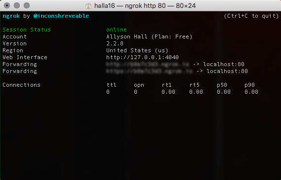

WORKING WITH CI AND RELATED TOOLS
What is CI?
Continuous Integration or CI allows a project team to record committed changes and run tests over those changed files to make certain their work is considered valid. It protects the project from invalidity or well-formedness errors by giving a particular set of indicators.
For example, if a team member pushes an XML file with a well-formedness error, the Continuous Delivery or CD tool will send up a "red flag."
Implimenting a CD Tool into a GitHub Project Repo
One of the most popular CI tools in use by open-source projects on GitHub is called Travis CI, free to use as long as your project is open-source. If your project isn't open-source, its base price is a $69 per-month subscription fee good for one project.

In order to impliment Travis CI into your project's repo, you'll need to scroll down on the GitHub Marketplace app page until you see this:

Click on the green "Install it for free" button, which takes you to a payment screen. Don't worry--you won't need to make any payments or put in any card information! (Unless you are planning on purchasing a subscription fee.) Continue with the "payment processing" window:

You'll want to impliment the tool into the proper repo after this, or you can choose to impliment the tool into all of your repositories. Be careful not to impliment the tool on any repositories that aren't open-source projects, otherwise this will break the terms of use agreement with the free option for Travis CI.
You should now be taken to a page that looks similar to this:
Now, we're going to take a break from working directly with Travis CI and download another program that will allow us to actually use Travis CI.
Downloading ngrok
In order to set up Travis CI with our repository, we want to use ngrok, a program designed to expose our local host to the Internet. It's important to follow these directions exactly in order to get everything to work properly.
Working with ngrok
- Download ngrok.
- Unzip the file into the user file. If on a Mac: /Users/[username]
- Run the following command in Terminal:
./ngrok authtoken 3PB7HriDFtqrBze9ETiht_5fX5qqUDEE4Q5XT2zup7Z - Run
./ngrok helpin Terminal. - Run
./ngrok http 80. You should now see a layout similar to this screen in your Terminal:

- Open http://localhost:4040 in your browser. You should see a page similar to this: